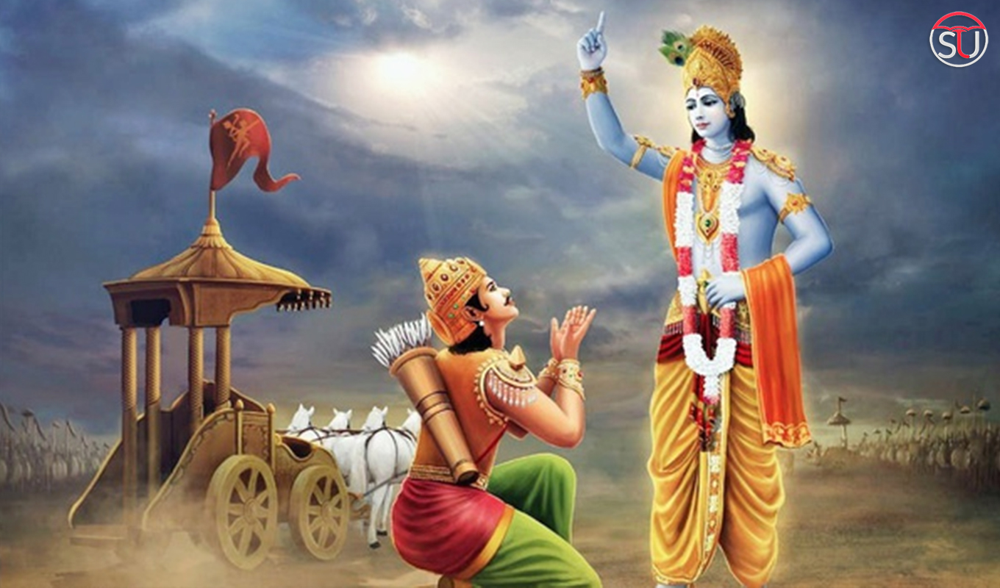
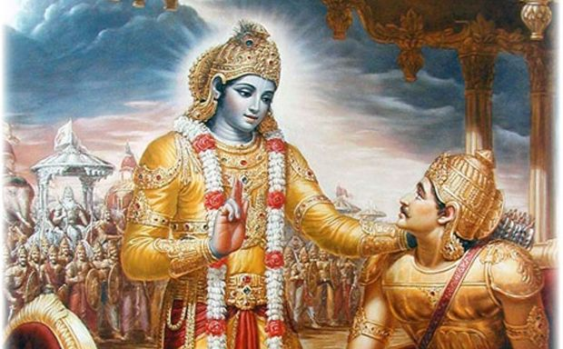

Arjun to Krishna

O Infallible One, please take my chariot to the middle of both armies, so that I may look at the warriors arrayed for
battle, whom I must fight in this great combat.I desire to see those who have come here to fight on the side of the
evil-minded son of Dhritarasthra, wishing to please him. O Krishna, seeing my own kinsmen arrayed for battle here and
intent on killing each other, my limbs are giving way and my mouth is drying up.
My whole body shudders; my hair is standing on end. My bow, the Gāṇḍīv, is slipping from my hand, and my skin is burning
all over. My mind is in quandary and whirling in confusion; I am unable to hold myself steady any longer. O Krishna,
killer of the Keshi demon, I only see omens of misfortune. I do not foresee how any good can come from killing my own
kinsmen in this battle.
O Krishna, I do not desire the victory, kingdom, or the happiness accruing it. Of what avail will be a kingdom,
pleasures, or even life itself, when the very persons for whom we covet them, are standing before us for battle?
Teachers, fathers, sons, grandfathers, maternal uncles, grandsons, fathers-in-law, grand-nephews, brothers-in-law, and
other kinsmen are present here, staking their lives and riches. O Madhusudan, I do not wish to slay them, even if they
attack me. If we kill the sons of Dhritarashtra, what satisfaction will we derive from the dominion over the three
worlds, what to speak of this Earth?
O Maintainer of all living entities, what pleasure will we derive from killing the sons of Dhritarasthra? Even though
they may be aggressors, sin will certainly come upon us if we slay them. Hence, it does not behoove us to kill our own
cousins, the sons of Dhritarashtra, and friends. O Madhav (Krishna), how can we hope to be happy by killing our own
kinsmen?
Their thoughts are overpowered by greed and they see no wrong in annihilating their relatives or wreaking treachery upon
friends. Yet, O Janardan (Krishna), why should we, who can clearly see the crime in killing our kindred, not turn away
from this sin?
When a dynasty is destroyed, its traditions get vanquished, and the rest of the family becomes involved in irreligion.
With the preponderance of vice, O Krishna, the women of the family become immoral; and from the immorality of women, O
descendent of Vrishni, unwanted progeny are born.
An increase in unwanted children results in hellish life both for the family and for those who destroy the family.
Deprived of the sacrificial offerings, the ancestors of such corrupt families also fall.
Through the evil deeds of those who destroy the family tradition and thus give rise to unwanted progeny, a variety of
social and family welfare activities are ruined.
Alas! How strange it is that we have set our mind to perform this great sin. Driven by the desire for kingly pleasures,
we are intent on killing our own kinsmen. It will be better if, with weapons in hand, the sons of Dhritarashtra kill me
unarmed and unresisting on the battlefield.
Krishna to Arjuna

My dear Arjun, how has this delusion overcome you in this hour of peril? It is not befitting an honorable person. It leads not to the higher abodes, but to disgrace.
It does not befit you to yield to this unmanliness. Give up such petty weakness of heart and arise, O vanquisher of enemies.
Arjun to Krishna
How can I shoot arrows in battle on men like Bheeshma and Dronacharya, who are worthy of my worship, O destroyer of enemies?
It would be better to live in this world by begging, than to enjoy life by killing these noble elders, who are my teachers. If we kill them, the wealth and pleasures we enjoy will be tainted with blood.
We do not even know which result of this war is preferable for us—conquering them or being conquered by them. Even after killing them we will not desire to live. Yet they have taken the side of Dhritarasthra, and now stand before us on the battlefield.
I am confused about my duty, and am besieged with anxiety and faintheartedness. I am your disciple, and am surrendered to you. Please instruct me for certain what is best for me.
I can find no means of driving away this anguish that is drying up my senses. Even if I win a prosperous and unrivalled kingdom on the earth, or gain sovereignty like the celestial gods, I will be unable to dispel this grief.
Krishna to Arjuna
While you speak words of wisdom, you are mourning for that which is not worthy of grief. The wise lament neither for the living nor for the dead.
Never was there a time when I did not exist, nor you, nor all these kings; nor in the future shall any of us cease to be.
Just as the embodied soul continuously passes from childhood to youth to old age, similarly, at the time of death, the soul passes into another body. The wise are not deluded by this.
The contact between the senses and the sense objects gives rise to fleeting perceptions of happiness and distress. These are non-permanent, and come and go like the winter and summer seasons. O descendent of Bharat, one must learn to tolerate them without being disturbed.
Noblest amongst men, that person who is not affected by happiness and distress, and remains steady in both, becomes eligible for liberation.
Of the transient there is no endurance, and of the eternal there is no cessation. This has verily been observed by the seers of the truth, after studying the nature of both.
That which pervades the entire body, know it to be indestructible. No one can cause the destruction of the imperishable soul.
Only the material body is perishable; the embodied soul within is indestructible, immeasurable, and eternal. Therefore, fight, O descendent of Bharat.
Neither of them is in knowledge—the one who thinks the soul can slay and the one who thinks the soul can be slain. For truly, the soul neither kills nor can it be killed.
The soul is neither born, nor does it ever die; nor having once existed, does it ever cease to be. The soul is without birth, eternal, immortal, and ageless. It is not destroyed when the body is destroyed.
How can one who knows the soul to be imperishable, eternal, unborn, and immutable kill anyone or cause anyone to kill?
As a person sheds worn-out garments and wears new ones, likewise, at the time of death, the soul casts off its worn-out body and enters a new one.
Weapons cannot shred the soul, nor can fire burn it. Water cannot wet it, nor can the wind dry it.
The soul is unbreakable and incombustible; it can neither be dampened nor dried. It is everlasting, in all places, unalterable, immutable, and primordial.
The soul is spoken of as invisible, inconceivable, and unchangeable. Knowing this, you should not grieve for the body.
If, however, you think that the self is subject to constant birth and death, O mighty-armed Arjun, even then you should not grieve like this.
Death is certain for one who has been born, and rebirth is inevitable for one who has died. Therefore, you should not lament over the inevitable.
All created beings are unmanifest before birth, manifest in life, and again unmanifest on death. So why grieve?
Some see the soul as amazing, some describe it as amazing, and some hear of the soul as amazing, while others, even on hearing, cannot understand it at all.
The soul that dwells within the body is immortal; therefore, you should not mourn for anyone.
Besides, considering your duty as a warrior, you should not waver. Indeed, for a warrior, there is no better engagement than fighting for upholding of righteousness.
Happy are the warriors to whom such opportunities to defend righteousness come unsought, opening for them the stairway to the celestial abodes.
If, however, you refuse to fight this righteous war, abandoning your social duty and reputation, you will certainly incur sin.
People will speak of you as a coward and a deserter. For a respectable person, infamy is worse than death.
The great generals who hold you in high esteem will think that you fled from the battlefield out of fear, and thus will lose their respect for you.
Your enemies will defame and humiliate you with unkind words, disparaging your might. Alas, what could be more painful than that?
If you fight, you will either be slain on the battlefield and go to the celestial abodes, or you will gain victory and enjoy the kingdom on earth. Therefore arise with determination, O son of Kunti, and be prepared to fight.
Fight for the sake of duty, treating alike happiness and distress, loss and gain, victory and defeat. Fulfilling your responsibility in this way, you will never incur sin.
Hitherto, I have explained to you Sānkhya Yog, or analytic knowledge regarding the nature of the soul. Now listen, O Parth, as I reveal Buddhi Yog, or the Yog of Intellect. When you work with such understanding, you will be freed from the bondage of karma.
Working in this state of consciousness, there is no loss or adverse result, and even a little effort saves one from great danger.
The intellect of those who are on this path is resolute, and their aim is one-pointed. But the intellect of those who are irresolute is many-branched.
Those with limited understanding, get attracted to the flowery words of the Vedas, which advocate ostentatious rituals for elevation to the celestial abodes, and presume no higher principle is described in them. They glorify only those portions of the Vedas that please their senses, and perform pompous ritualistic ceremonies for attaining high birth, opulence, sensual enjoyment, and elevation to the heavenly planets.
With their minds deeply attached to worldly pleasures and their intellects bewildered by such things, they are unable to possess the resolute determination for success on the path to God.
The Vedas deal with the three modes of material nature, O Arjun. Rise above the three modes to a state of pure spiritual consciousness. Freeing yourself from dualities, eternally fixed in truth, and without concern for material gain and safety, be situated in the self.
Whatever purpose is served by a small well of water is naturally served in all respects by a large lake. Similarly, one who realizes the Absolute Truth also fulfills the purpose of all the Vedas.
You have a right to perform your prescribed duties, but you are not entitled to the fruits of your actions. Never consider yourself to be the cause of the results of your activities, nor be attached to inaction.
Be steadfast in the performance of your duty, O Arjun, abandoning attachment to success and failure. Such equanimity is called Yog.
Seek refuge in divine knowledge and insight, O Arjun, and discard reward-seeking actions that are certainly inferior to works performed with the intellect established in Divine knowledge. Miserly are those who seek to enjoy the fruits of their works.
One who prudently practices the science of work without attachment can get rid of both good and bad reactions in this life itself. Therefore, strive for Yog, which is the art of working skillfully (in proper consciousness).
The wise endowed with equanimity of intellect, abandon attachment to the fruits of actions, which bind one to the cycle of life and death. By working in such consciousness, they attain the state beyond all suffering.
When your intellect crosses the quagmire of delusion, you will then acquire indifference to what has been heard and what is yet to be heard (about enjoyments in this world and the next).
When your intellect ceases to be allured by the fruitive sections of the Vedas and remains steadfast in divine consciousness, you will then attain the state of perfect Yog.